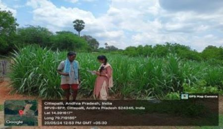
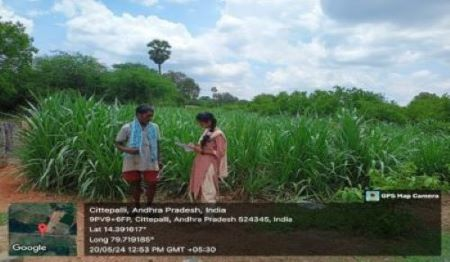

WEEKLY REPORT
WEEK- 2 (From 20-05-24 to 25-05-24)
Objective of the Activity Done: Utilization Of Electricity by Farmers and Related Issues
Detailed Report:
Day 1:
- >On this day our team visited Rajupalem in the Nellore district and conducted survey.
- >The village is known for its traditional farming practices.
- >We identified area is fertile and well-suited for growing a variety of crops due to the favorable climatic conditions.
Day 2:
- >We asked them how they use electricity for their purposes.
- >We came to know, some farmers use electricity for drip and sprinkler irrigation.
- And electric threshers to separate grains from the harvested crops, saving time and labor.
Day 3:
- >We asked them how they use electricity for their purposes.
- >We came to know, some farmers use electricity for drip and sprinkler irrigation.
- >And electric threshers to separate grains from the harvested crops, saving time and labor.
Day 4:
- >We noticed motors are critical component in modern farming.
- >We questioned them regarding usage of motors.
- >Motors are extensively used to power electric water pumps, which draw water from wells, canals, and tanks to irrigate fields.
Day 5:
- >We surveyed how often they use electricity for a day.
- >We gathered information is that, electricity is good for one time a day and not for another time.
Day 6:
- >We observed mostly that, paddy is the most common growing crop in Rajupalem.
- >For this they use electric water pumps, drip and sprinkler systems in giving most importance to electricity
- >And finally, we submitted this week report to our respected guide.
 
